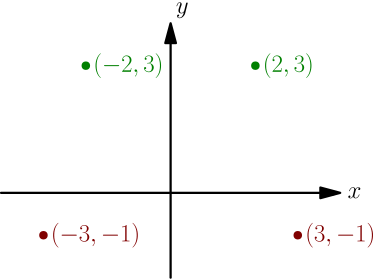
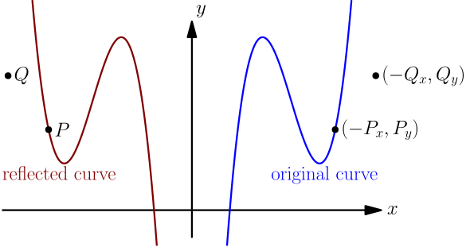
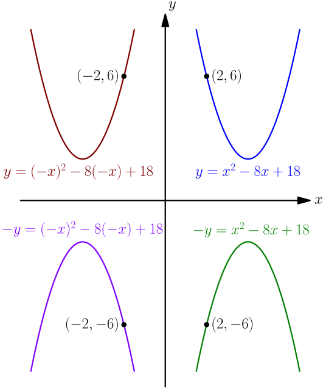

Reflecting¶
This is also known as mirroring and flipping.
To reflect a point to the other side of the $y$ axis, simply flip the sign of the $x$ coordinate:

In general, reflecting a point $P=(P_x, P_y)$ gives the point $(-P_x, P_y)$, because $-P_x$ is what we get by flipping the sign of $P_x$.
Let's consider what happens to the equation of a curve when we reflect the whole curve to the other side of the $y$ axis. To figure out whether a point $P$ is on the reflected curve, we can simply check whether its reflection $(-P_x, P_y)$ is on the original curve. In the below picture, $P_x$ and $Q_x$ are negative, so $-P_x$ and $-Q_x$ are positive.

To find the equation of the reflected curve, we do this for the point $(x,y)$; it is on the reflected curve if and only if its reflection $(-x, y)$ is on the original curve, and that's true if and only if the equation of the original curve is satisfied after replacing $x$ with $-x$.
Replacing $x$ with $-x$ in the equation of a curve reflects the curve about the $y$ axis.
Of course, we can do the exactly same things with $y$ instead of $x$. This gives the following result.
Replacing $y$ with $-y$ in the equation of a curve reflects the curve about the $x$ axis.
Here's an example showing what this looks like. The blue parabola at top right has no reflections done to it, and the purple parabola at bottom left has both of the above reflections combined.
